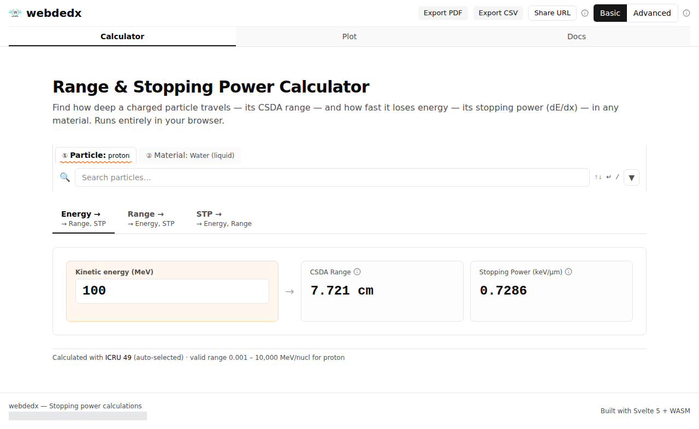
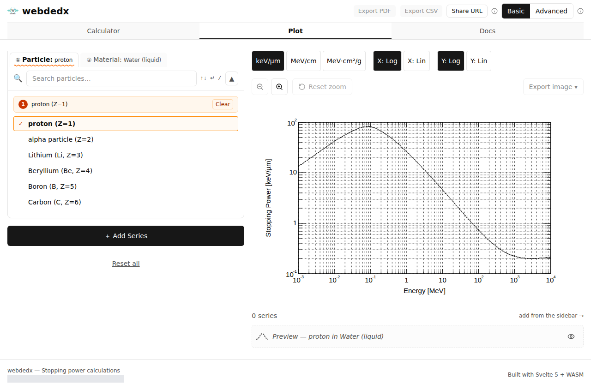

User Guide
webdedx calculates the stopping power (dE/dx) and range of charged particles in matter. There is nothing to install — every calculation runs locally in your browser, and the page works on both phones and desktops.
Two-minute tour below. Jump to a section:
1. Calculate stopping power & range
Open the Calculator tab to get the stopping power and CSDA range for a particle in a material, at one energy or a list of energies.

- Pick a particle, material, and program. Choose e.g. proton, Water (liquid), and a program. Leaving the program on Auto lets webdedx pick a compatible one (here, ICRU 49).
- Enter an energy. Type a value into the Energy field — results update instantly. A 100 MeV proton in liquid water gives 0.7286 keV/µm and a 7.721 cm range.
- Add more rows. Use + Add row to compare several energies side by side.
- Go Advanced when you need more. The Basic / Advanced switch (top right) unlocks density and I-value overrides, inverse lookups (find the energy for a given range or stopping power), and multi-entity comparisons.
- Export or share. Export PDF / CSV, or use Share URL — the entire app state lives in the link, so it reproduces exactly what you see.
2. Plot curves
The Plot tab draws stopping power (or range) versus energy as an interactive curve, so you can see the whole picture at a glance.

- Choose the particle and material just like in the calculator.
- Switch the Y unit (keV/µm, MeV/cm, MeV·cm²/g) and toggle log / linear axes with the buttons above the chart.
- Use + Add Series to overlay several particles or materials for comparison.
- Export the chart as an image with Export image.
Good to know
- Everything is in the URL. Bookmark or send a link and it restores the particle, material, program, energies, units, and advanced options.
- Units convert on the fly. Change stopping-power or energy units from the column headers / axis toggles — the underlying calculation does not re-run.
- Works offline. Once the page has loaded, calculations run entirely in your browser.
Loading your own datasets
External stopping-power tables can be loaded by opening Calculator or Plot with an extdata query parameter, in the form extdata=<label>:<encoded dataset URL>, where the URL points to the root of a hosted .webdedx directory.
After loading, the source appears in a collapsible External Data Sources panel below the entity selectors. Its programs show up in the Program selector under an External group (🔗 prefix, (ext) suffix); external-only
particles and materials appear in their own External groups.
Calculator with the SRIM reference dataset
Proton in liquid water, ICRU 49, single 100 MeV row:
http://sveltekit-prerender../calculator?urlv=3&extdata=srim:https%3A%2F%2Fs3.cloud.cyfronet.pl%2Fdedxweb%2Fsrim-gui.webdedx%2F&particle=1&material=276&program=7&energies=100&eunit=MeVKeyboard shortcuts
The entity picker (Particle / Material / Program) is built for keyboard-first navigation:
| Key | Action |
|---|---|
| / | Focus the search field (expands the panel if collapsed) |
| ↑ / ↓ | Move the highlight up / down through the list |
| ↵ Enter | Select the highlighted item; jumps to the next empty field |
| Escape | Blur focus and collapse the picker (on the Calculator page) |
| ← / → | Cycle Particle / Material / Program tabs (when a tab is focused) |
Tip: press /, type to
filter, use ↑↓ to highlight, then ↵ to confirm and move to the next field.